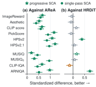
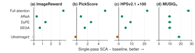
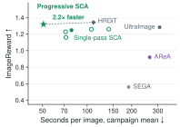
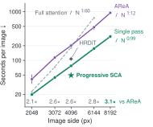
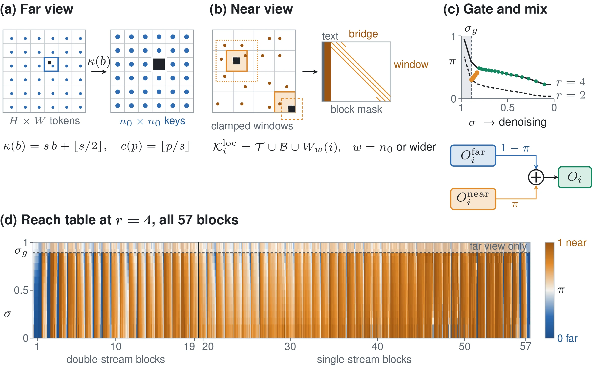
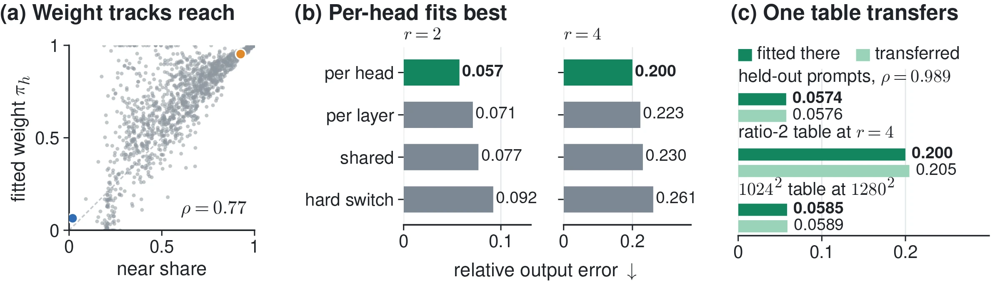

Reach Is a Property of the Head
Results
All results and protocol
Every metric with its interval, the seeds and HRGen-1K, timing, the method in detail and the full limitations. The main page keeps the headline; this page keeps the rest.
Results
Main comparison at 4096²
FLUX.1-dev at 4096² on all 195 Aesthetic-4K prompts. Intervals are paired bootstrap 95% intervals over prompts; Holm’s correction over the ten per-image metrics leaves every “all ten” claim intact.
Three seeds and HRGen-1K
all ten per-image metrics
Progressive SCA beats AReA on every per-image metric at each of the three seed labels and on all 1000 HRGen-1K prompts.
| Run | ImageReward gain |
|---|---|
| Seed 0 | +0.40 [0.32, 0.49] |
| Seed 1 | +0.37 [0.29, 0.46] |
| Seed 2 | +0.35 [0.27, 0.45] |
| HRGen-1K | +0.90 [0.84, 0.96] |
Seconds per 4096² image
Batch-1 median after a warm-up on one idle GH200, the three methods timed back to back. Progressive SCA is 4.1× faster than AReA and takes 46% of HRDiT's time on the same schedule.
Table 1 of the paper
| Method | Steps | Time (s) ↓ | Image Reward ↑ | HPSv2.1 ↑ | Pick Score ↑ | CLIP ↑ | MUSIQc ↑ | FID ↓ | Patch FID ↓ | |
|---|---|---|---|---|---|---|---|---|---|---|
| clean | camp. | |||||||||
| Single pass, shared sampler (28 steps, guidance 4.5) | ||||||||||
| Full attention | 28 | 186.5 | 196.2 | −2.18 | 7.60 | 17.94 | 15.37 | 33.1 | 312.4 | 252.2 |
| DyPE | 28 | n/m | 195.9 | −0.10 | 20.55 | 20.51 | 24.92 | 50.3 | 205.5 | 171.9 |
| SEGA | 28 | n/m | 190.4 | 0.56 | 24.34 | 21.64 | 26.95 | 50.3 | 164.9 | 125.8 |
| AReA | 28 | 202.4 | 264.4 | 0.92 | 27.16 | 22.36 | 27.69 | 50.4 | 145.8 | 102.9 |
| Single-pass SCA (ours) | 28 | 77.1 | 78.4 | 1.25 | 29.73 | 23.12 | 29.14 | 60.1 | 140.2 | 98.4 |
| Multi-stage, own recipe and budget | ||||||||||
| UltraImage | 30+30 | n/m | 308.5 | 1.28 | 30.77 | 23.33 | 28.84 | 41.7 | 142.0 | 109.5 |
| HRDiT | 30+17+10 | 107.0 | 110.4 | 1.34 | 30.92 | 23.46 | 29.12 | 53.5 | 138.4 | 103.0 |
| Progressive SCA (ours) | 30+17+10 | 49.2 | 50.7 | 1.32 | 31.02 | 23.41 | 29.39 | 54.1 | 141.9 | 107.7 |
Paper Table 1. Seed label 0. Seconds on one GH200: clean is the batch-1 median after a warm-up; campaign is the mean over the full run on shared nodes, not ranked; n/m: not measured. Clean times come from three sweeps: AReA and full attention from the first, single-pass SCA from the second, HRDiT and progressive SCA from the third, which re-timed AReA at 202.4 s. HPSv2.1 ×100; MUSIQc is MUSIQ on 1024² crops; patch FID is our own definition and is not comparable across papers. Bold: best; underline: second best, within each group. Blue: significantly better than progressive SCA; orange: significantly worse (95% paired intervals).
Both modes against AReA, and progressive SCA against HRDiT

Against HRDiT, the same schedule
Statistically indistinguishable in ImageReward (−0.02 [−0.09, 0.03]), HPSv2.1 (+0.10 [−0.14, 0.35], ×100) and PickScore (−0.05 [−0.14, 0.04]), in 49.2 against 107.0 s; intervals that include zero do not establish equivalence. After Holm’s correction progressive SCA remains better on HPSv2 (+0.38) and ARNIQA (+2.9) and is worse on none. Crop detail is level (MUSIQc +0.6). HRDiT keeps lower patch FID (+4.6 [0.6, 7.7] for progressive SCA).
Against single-pass SCA
Progressive SCA gains ImageReward (+0.07 [0.01, 0.13]) and PickScore (+0.29 [0.20, 0.38]). Single-pass SCA keeps more fine detail: MUSIQ on 1024² crops is −6.0 [−7.3, −4.6] for progressive SCA and its patch FID is higher by +9.2 [5.1, 13.2].
Set-level scores against AReA
FID is unresolved at seed 0 (−3.9 [−8.5, 3.1]). The patch FID gap is significant at seeds 0 and 2 (+4.8 [0.1, 10.6] and +5.4 [0.8, 10.8]) but not at seed 1 (+1.5 [−2.7, 6.9]).
Other baselines
Better than DyPE, SEGA and full attention on 10, 10 and 10 of 10 per-image metrics, and than UltraImage on 9; aesthetic score is unresolved there.
Single pass, more prompts and checkpoints
On HRGen-1K single-pass SCA beats AReA on 10 of 10 per-image metrics. On FLUX.1-Krea-dev it wins 7 of 10 and loses none at 3.1× AReA's speed; ImageReward is unresolved there (+0.020 [−0.020, 0.063]).
FLUX.2-dev
SCA without the window schedule beats full attention on 9 of 10 per-image metrics at 2.0× its speed; ImageReward rises from 0.75 to 1.20 (50 prompts).
Progressive SCA against every baseline

Generality: seeds, prompt sets and checkpoints
The paired differences across seeds, HRGen-1K and other checkpoints are Table 3 of the paper.
Time
Seconds per image
Clean latency is the batch-1 median of three prompts on one idle GH200 after a warm-up image; ratios divide times of the same kind. Single-pass SCA’s time grows linearly with the pixel count: at 8192² it takes 309.7 s against AReA’s 952.0 s.
Quality against time at 4096²

Seconds against image side

The method in detail
Two views, reach emulation, one table
The paper’s operator figure, reach emulation and the two samplers, with the real reach table and three real heads.


The two views at 4096²
A native window and a native view of the whole image
Local: an exact 64 × 64-token window around each 8 × 8 query tile at its original positions, plus the text and 1,024 bridge tokens from the whole image. Global: one real token per block, a 64 × 64 grid over the whole image with its coordinates rescaled to that grid. Each head returns
Oh = πh Oloc + (1 − πh) Oglob.
Every offset in both views stays inside the range seen in training, bridge keys aside, so the model keeps its own RoPE. The cost grows linearly with the number of tokens.
Closed form
The best weight is one division
For each block, head, noise level and ratio, three sums over prompts, steps, queries and channels give the squared error of any weight:
J(π) = E − 2πB + π2A, π* = clip(B / A, 0, 1),
with A = Σ‖Oloc − Oglob‖2, B = Σ⟨Ofull − Oglob, Oloc − Oglob⟩ and E = Σ‖Ofull − Oglob‖2. One emulation pass over 32 prompts fills the reach table for ratios 2 and 4. Reach tables fitted on disjoint halves of the prompts correlate at 0.989.
Sampling
Progressive SCA, the headline
We keep HRDiT's released three-stage schedule as is: 30 steps at 1024² with the model's own attention set the layout. The image is then decoded, upsampled, sharpened, re-encoded and re-noised for the last 17 steps at 2048² and the last 10 at 4096². SCA replaces HRDiT's attention changes at both upper stages, reading ratio 2 and then 4 from one table.
Single-pass SCA is the fast mode: all 28 steps at the target, the global view alone for the first 8 as in AReA, then windows of 128, 112, 96, 80 tokens before the native 64. The opening, the window sizes and the bridge are set by hand; only the weights are fitted.
Progressive SCA, 57 steps
Single-pass SCA, 28 steps at 4096²
The 2048² stage re-enters at σ = 0.81, the 4096² stage at σ = 0.61; guidance is 3.5, 4.5 and 6.0. Both upper stages start after the point where single-pass SCA opens with the global view alone, so the 1024² stage takes the place of that opening.
Limitations
What SCA does not fix
- Patch-level fidelity. Progressive SCA’s patch FID is higher than HRDiT’s (+4.6) and single-pass SCA’s (+9.2), and inside its sampler coarser weights have lower patch FID than per-head weights. Its patch FID is higher than AReA’s at two of three seeds.
- Hand-set parts. The opening, the window sizes and the bridge are set by hand; only the weights are measured. The window sizes were chosen on the 46-prompt ablation subset, which is part of the evaluation set.
- Single pass. In single-pass mode, small additional figures occasionally appear in scenes with people or animals; the progressive configuration reduces this to the level of the multi-stage baselines.
- Dependence on HRDiT. Progressive SCA uses HRDiT’s sampler, which does not support FLUX.1-Krea-dev, so the 6144², 8192², FLUX.2-dev and sensitivity results use SCA without the schedule. At 6144² and 8192² its samples show block and stripe artifacts.
- The fit. Reach emulation omits the bridge and sees 16 times fewer keys per view than the target, so the deployed operator’s output error is untested.
- Metrics. All metrics are automatic. FID at 299² sees little of the 4K detail; patch FID is our own definition and is not comparable across papers.
Protocol
How the numbers were made
The main set is the 195-prompt Aesthetic-4K split with its 4K references, as in AReA, DyPE, TIDE and SigMa, and the 1000 HRGen-1K prompts; all methods share seed labels 0, 1 and 2. Four prompts were used in development and favour SCA slightly; ablations use a 46-prompt subset fixed beforehand. The ten per-image metrics are ImageReward, HPSv2, HPSv2.1, PickScore, CLIP score, aesthetic score, MUSIQ on the full image and over four 1024² crops, CLIP-IQA and ARNIQA. Intervals are 95% paired percentile bootstraps over prompts; Holm’s correction runs over the ten per-image metrics.
Progressive SCA runs HRDiT’s 30+17+10 steps at guidance 3.5, 4.5 and 6.0; single-pass SCA, AReA, DyPE, SEGA and full attention share AReA’s sampler, 28 Euler steps at guidance 4.5. One reach table per checkpoint (32 prompts for FLUX.1-dev) serves every size and both modes.